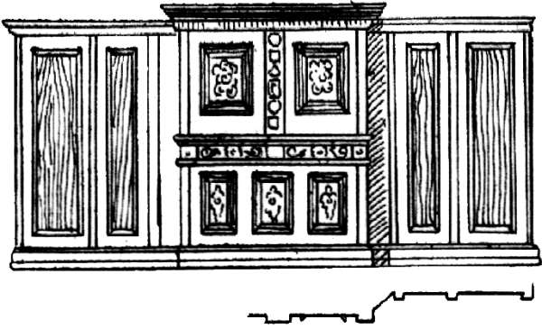
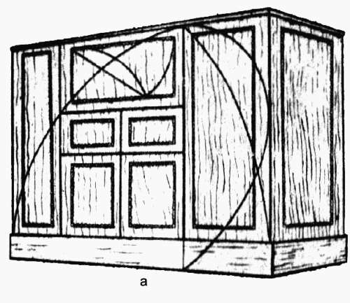
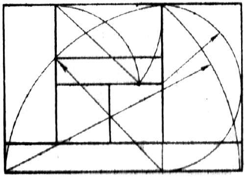

Сложные композиции разной конструкции.

Сложная композиция состоит из объединения нескольких элементов, каждый из которых сам представляет собой то или иное творческое решение. В мебели этот тип композиции является доминирующим, так как с его помощью решаются фасадные и лицевые стороны предмета. Сущность композиции этого рода заключается в определении силы выразительности каждой из частей и характера соподчиненности их в целом для придания предмету цельности и выразительности.
Основой для сложных плоскостных или объемно-фронтальных композиций служит плоскость, составленная из щитов или рамок с внутренним заполнением. При этом несущие каркасные детали имеют композиционно подчиненное значение и служат для усиления выразительности плоскостных элементов.
При создании сложных композиций используют техники интарсии, маркетри, а также плоскостные, рельефные, линейные, рельефно– плоскостные и точеные детали, накладки и вставки из недревесных материалов (металла, пластмасс). Смешанные приемы компоновки украшающих и конструктивных деталей дают большое количество вариантов.

Рис. 41. Сложная композиция на основе шкафа-стенки
В сложных композициях прямоуголъник не является доминирующей фигурой, разрабатываются композиции с использованием круга, многоугольников, симметричных фигур неправильной формы. Основой для композиционной работы с применением комбинированных приемов служит большая нерасчлененная плоскость. Если основа должна быть расчленена, перед созданием на ней композиции необходимо привести эти части в единую гармоничную систему. Примером нерасчлененной основы может служить фасад одностворчатого шкафа, дверь в комнату, передняя стенка секретера, надкаминная доска, столешница. Схема нерасчлененной композиции – плоскость, обрамленная по контуру и имеющая развитый центральный сложный композиционный узел, к которому стягиваются внутренние членения.
Развитая схема представляет собой обрамленную плоскость с двумя композиционными центрами. В качестве примером такой схемы можно назвать двустворчатую дверь, обрамленную общим наличником. В такой композиции роль обрамления очень велика – она объединяет две самостоятельные детали.
Очередной этап развития сплошной композиции – расчленение плоскости основы на три и более частей. Одну из них выделяют в качестве композиционного центра, при этом необходимо учитывать влияние и значимость композиционных осей. Если центральная ось должна доминировать, нельзя перенасыщать краевые и угловые части, отвлекая тем самым внимание на побочные детали.
Обратите внимание: центральная ось – это ось главного композиционного узла, а не средняя, расположенная в середине общей формы. Главная композиционная ось может находиться и сверху и на краю предмета (например, в асимметричных предметах).
Расчлененные части основы могут не образовывать общей поверхности в одном уровне, они могут быть и в разных уровнях, но иметь одну общую ориентацию – фронтальную. Например, мебельные предметы – буфет, сервант, платяной шкаф – очень часто имеют лицевые плоскости, расположенные в разных уровнях. Эта композиционная схема является переходной к предметам, имеющим объемно-рельефную структуру.
Многоцентровые сложные композиции, расположенные в одной плоскости, требуют больших размеров основы, они также обычно соответствуют габаритам целого предмета. Сложными композиционными схемами решают круглые, овальные и многоугольные формы, соответствующие крышкам больших столов. Характерная особенность такой композиции – законченность общей формы, взятой в качестве основы. Столяру не приходится представлять себе общее целое, в котором разрабатывается деталь, что наблюдается при работе над небольшими композиционными украшениями. Здесь целое предстает воочию, а работа сводится к выполнению декоративно-орнаментальной части такой большой и сложной поверхности.
Когда разрабатывается сложная композиционная схема, особое значение приобретают пропорции основы, т. е. соотношения размеров большой формы (длины, ширины, толщины обрамления) к середине. С учетом этого определяют места членений общей плоскости, разделяющих ее на части. Разрабатывая сложную композицию, следует оценивать выразительность той или иной системы украшений в зависимости от членения, освещения и характера пользования. Композиция поверхностей, освещаемых прямым светом, например столешниц, строится на контрасте тона и изменении фактуры сочетаемых деталей. Композицию поверхностей, освещаемых скользящим светом, нужно строить на основе рельефа. Точеными или резными деталями, отстоящими от основной плоскости или сильно выступающими за нее, украшают неподвижные части предмета, которые человек не задевает при движении. Подобные украшения помещают либо выше уровня головы человека, либо в углублениях, боковые стенки которых служат им защитой.
Главная задача композиционной работы с объемными элементами состоит в гармонизации их сочетаний, выявлении главного объема, вокруг которого объединяются остальные. Очень важно при этом добиться цельности впечатления. Если в плоскостных композициях орнаментального характера практически всегда имеются оси симметрии, то в такой композиции они могут и не присутствовать, а внутреннее равновесие может достигаться сочетанием разновеликих частей, обладающих при этом разной композиционной силой и звучанием.
Итак, в объемных композициях особое значение приобретает соблюдение пропорций, причем не столько в смысле применения тех или иных пропорциональных соотношений, построенных на гармоничных фигурах и выражаемых численно, сколько в гармонии зрительных соотношений объемов. Такая гармония основана исключительно на внутреннем чутье, поэтому торопиться при работе не следует, важно присмотреться и прислушаться к чувству, которое появляется во время работы. Любой намек на неудовлетворенность должен служить основанием для глубокого размышления и оценки. Так как объем – это выпуклая форма, то выступающие части в объемной композиции при равнозначном положении обладают большей выразительностью, чем разного рода ниши и выемки..
Часто встречающееся в мебельных изделиях остекление плоскостей объемов, входящих в композицию, является приемом, который уравнивает выразительность ниши с глухой плоскостью. Стекло, несмотря на прозрачность, составляет такую же зрительно ощущаемую поверхность предмета, как и дерево. Даже в очень чистом стекле всегда есть участки, дающие отражение и тем самым определяющие поверхность. Такой эффект дает возможность остекленную нишу использовать в качестве главного элемента композиции.
В структуре объемной композиции большое значение получает тектоника. Чрезвычайно важно убедительно выделить несущую конструктивную часть, отделить ее от навесных, вставных, т.е. второстепенных элементов. Такой прием придает композиции основательность, законченность, ясность, правильно ориентирует ее в пространстве. Выделить конструктивную основу можно путем специальной обработки несущих элементов. В щитовых конструкциях это сделать труднее, здесь могут быть использованы торец и край щита для организации переходов и соединений щитов между собой.


Рис. 42. Шкаф с декоративной обработкой контуров щитов: а – общий вид шкафа; б – пропорциональная основа композиции
Гармоничность соединений объемов, входящих в композицию, наиболее точно определяется на ортогональных чертежах всех видимых сторон предмета, а если композиция объемно-фронтальная, то на главном фасаде и разрезах. Для выявления объемов большую роль играет правильное изображение теней, падающих от всех выступающих деталей, а не только от главных объемов. Скажем, чрезмерно выделенная тень от промежуточного карниза или членения может полностью деформировать объем, который в целом выбран верно.
Важное значение имеет учет различия в цвете соединяемых деталей (тяжелый и легкий), а в дереве – разность глубины тона окраски. При большой разнице может возникнуть дробление объема и, как следствие, дефект композиции. Именно поэтому при неудачно скомпонованной вещи стараются максимально утемнить цвет дерева. В светлом дереве композиционные просчеты гораздо заметнее. Но сами по себе объемы не гарантируют полноценность художественного решения, как бы гармонично они ни были соединены в единое целое. Объемы обладают реальной поверхностью, материалом, из которого эта поверхность выполнена.
При непривлекательной поверхности, явной дешевизне материала и даже при хорошем качестве отделки гармонично скомпонованная объемная вещь останется непривлекательной.
Правильное использование законов и приемов композиционной организации плоскости и поверхности дает возможность значительного обогащения объемной композиции. Порой композиционный просчет в связи объемов между собой может быть исправлен умело скомпонованной и богато решенной поверхностью.
Для уяснения гармоничности сочетания первичных основных объемов полезно бывает выполнить композицию в макете, который строится на основе проработанных чертежей. Хотя макетная проверка только тогда даст желаемый результат, если сам макет будет сделан очень точно в масштабах, соответствующих действительным размерам предмета.
От объемной композиции перейдем к рассмотрению объемно-пространственной композиции. Ее особенность заключается в том, что пространственная композиция не охватывается единым взглядом, она требует постепенного рассматривания. Это не один предмет, а совокупность нескольких предметов, объединенных общим материалом, приемами обработки и отделки украшений. В частности, встроенная мебель, часто объединяемая с архитектурными частями интерьера, имеющими столярную отделку, демонстрирует область применения объемно-пространственной композиции. Сюда же можно отнести и протяженные шкафы-купе. В таких композициях выбор центрального композиционного узла определяется часто конкретной обстановкой, но, как правило, главное художественное значение получает наиболее крупный и обособленный объем, который соответственно должен получить максимум художественной обработки. Выделение крупной части дает основание сделать остальную фоном для нее, что, в свою очередь, приводит к использованию лаконичных, обычно повторяющихся элементов. Если зрелищности в выбранном центральном объеме не хватает, в общую композицию вводят акценты, как бы поддерживающие на заданном уровне художественное решение осей композиции в целом.
Главную трудность при разработке всех видов объемной композиции составляет определение масштабности. Масштабность в данном случае определяет все размеры основных элементов, степень деталировки, ее характер, форму и разработку применяемых украшений. В этом заключается главное отличие в определении масштабности объемной композиции от работы над плоскостной композицией, где приходится лишь сообразовывать свое решение с той заданной и существующей основой, для которой разрабатывается плоскость и где масштабность очевидна сама по себе.
С одной стороны, масштабность связана с размерами человека, который пользуется вещью, с другой – с характером пространства, в котором предмет расположен. Так, одностворчатый книжный шкаф уместен в небольшой комнате и непригоден для комнаты широкой и высокой, в ней он будет немасштабен. В данном случае более правильным будет использовать четырехстворчатый шкаф, но, подчеркнем, внутренняя деталировка его по масштабности будет такой же, как и в одностворчатом шкафу.